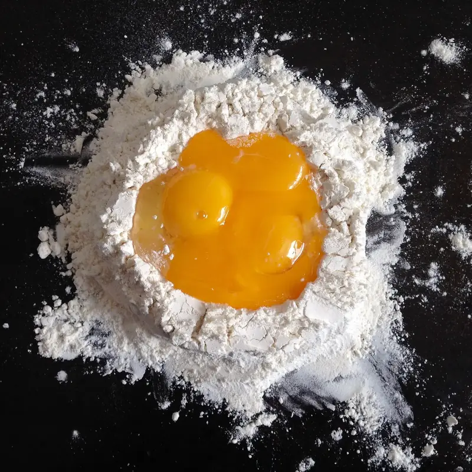

Una cucina di famiglia,
dal 1988.
Dall’8 marzo 1988 I Tre Fratelli cucina la Romagna di casa: uova e farina sul tagliere, il mattarello, la brace accesa prima del servizio. Niente scorciatoie, gli stessi gesti da più di trentacinque anni.
Si viene per un pranzo di lavoro, una cena tra amici, la domenica in famiglia. E da Ravenna, Faenza, Imola e Bologna si arriva in meno di un’ora.
- 38 anni
- di cucina romagnola
- 6 giorni
- su 7, lunedì riposo
- 2 servizi
- pranzo e cena
